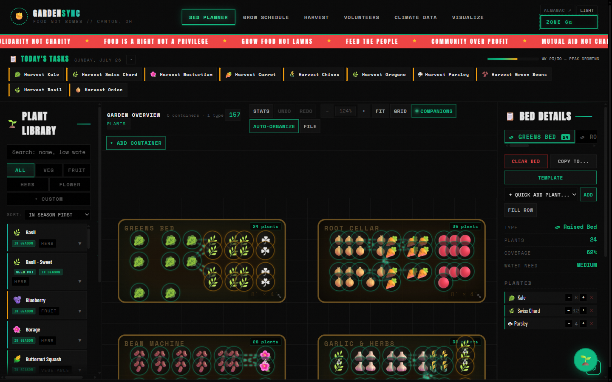

The Planner
/
Loud and high-contrast, with a manifesto ticker running across the top. Six workspaces cover planning, scheduling, harvest, crew, climate and AI mockups — plus Garden Buddy, an assistant that places plants and rearranges beds on request.